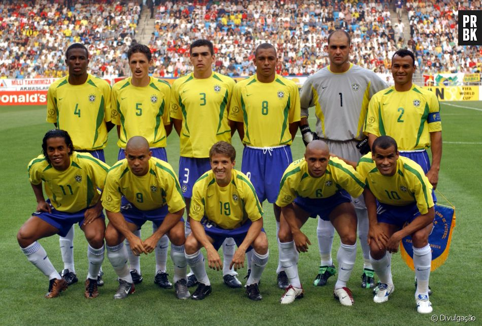

	<Body bgcolor="#40E0D0">
	<font size ="4" face= "arial">

	<a name="iniLista"></a>
		<h2><a href= "#fimLista"> Ir para o fim da Lista </a><h2>
		<center></center>
<h2><center>Escalação Seleção Br 2002</center><h2>
<br><br>
		<center></center>
<br><br>
<html>
	<head>
		<title>Listas em HTML</title>
	</head>
	<body>
	
	<font size="4" face="Verdana">
		<h1> Lista Ordenada </h1> 
		<br>
		<ol>
			<li>Marcos</li>
			<li>Cafu</li>
			<li>Lucio</li>
			<li>Roque Junior</li>
			<li>Edmilson</li>
			<li>Roberto Carlos</li>
			<li>Cleberson</li>
			<li>Gilberto Silva</li>
			<li>Ronaldo</li>
			<li>Rivaldo</li>
			<li>Ronaldinho Gaúcho</li>

		</ol>
		</font>
<br><br>
			<a name="fimLista"></a>
			<h2><a href= "#iniLista"> Ir para o Início da Lista </a><h2>

<br><br>

		<p> <a href="index.html"> Clique AQUI </a>  para ir a página principal. </p> <br>

	</body>
</html>


